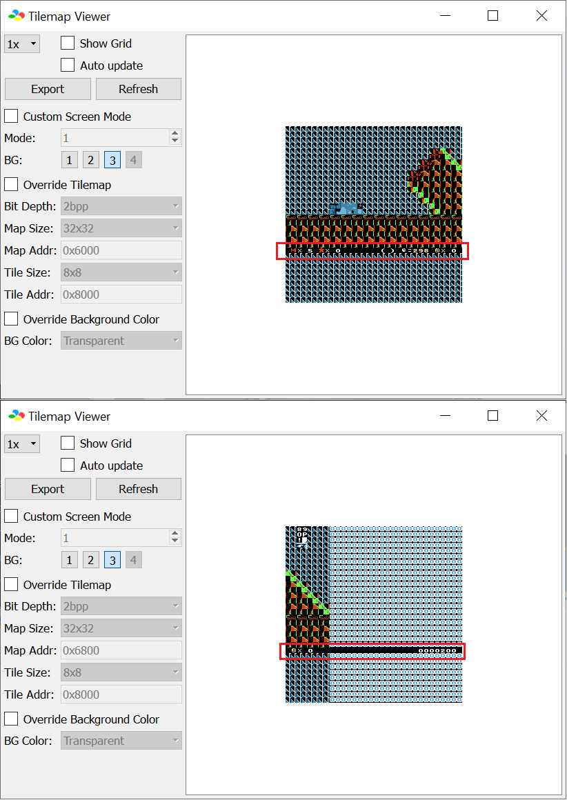
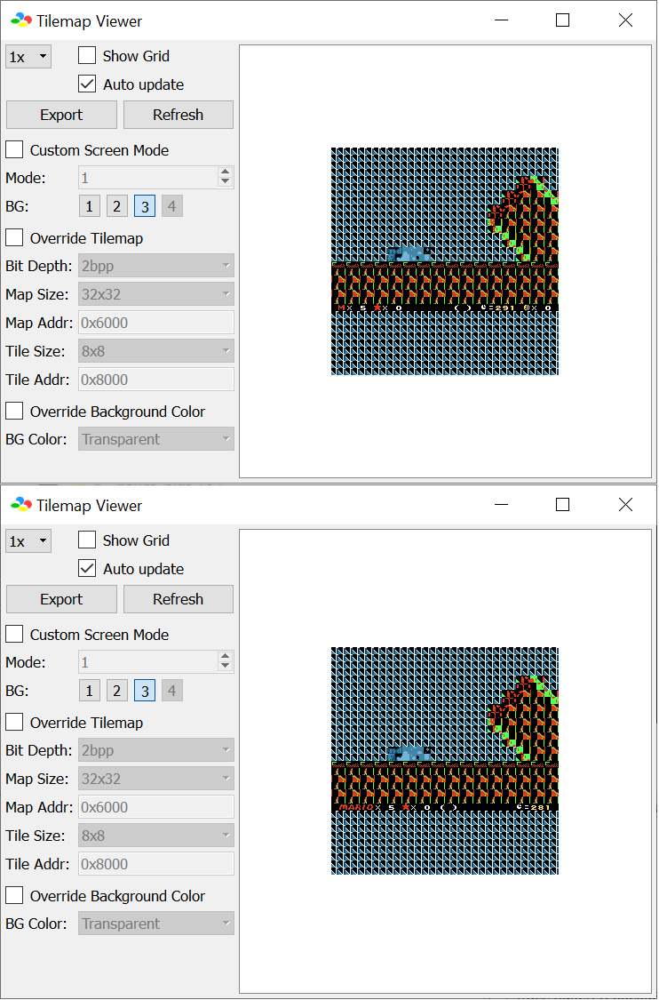
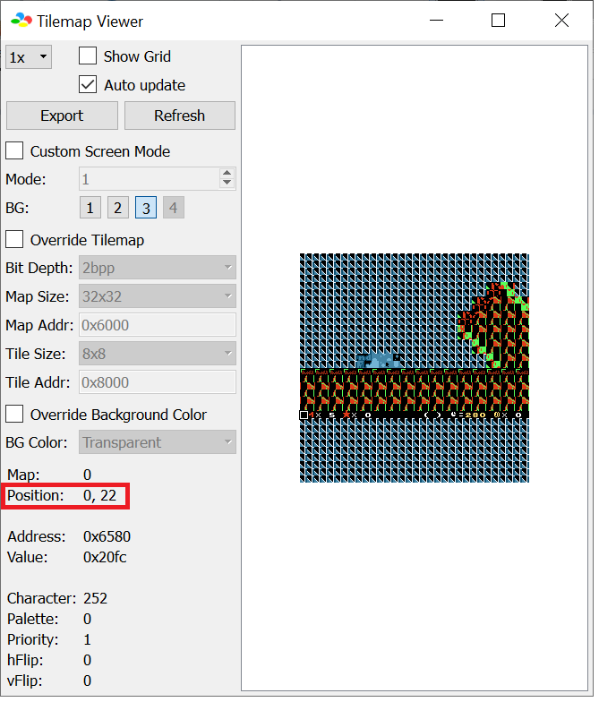

Each tile have 2 bytes of information stored in RAM: TTTTTTTT and YXPCCCTT. Unlike Super Status Bar or OWB+ patch, these patches have TTTTTTTT and
YXPCCCTT stored in separate tables (TileNumberTable: TTTTTTTT (tile 0), TTTTTTTT (tile 1), ... TilePropertiesTable: YXPCCCTT (tile 0), YXPCCCTT (tile 1), ...).
To find out the best way on finding their tiles on-screen is by using Bsnes+ debugger, →
Tools → Debugger → S-PPU → Tilemap Viewer and selecting “3” to view the layer 3 tilemap: 
However, for status_top.asm and status_double.asm, you cannot see top HUD due to the code handles it is based on timing of when
they write the HUD. Thus, you need to use the “Auto Update” and set a breakpoint (Debugger window → Tools → Breakpoint Editor, write
the address you want the execution to pause at, and check the checkbox labled “X”) mentioned in the Asar console window during patching in order to
view the top bar: 
The debugger does display the tile coordinate on the “Tilemap Viewer” when selecting a tile. Use that in conjunction of CTRL+F
to search for the corresponding RAM address below here (note that coordinates here doesn't use leading zeroes to force a 2-digit display), just ignore
the Y position since the status bar is only 1 line tall: 